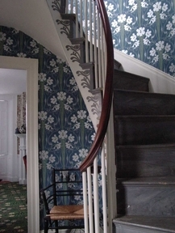
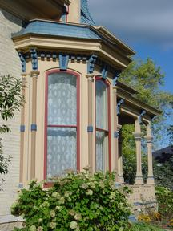
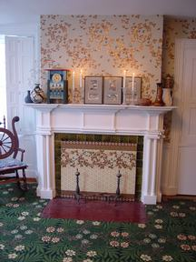
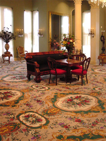
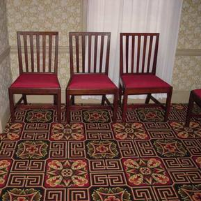
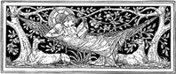

BURROWS STUDIO
CONSULTING SERVICES
John Burrows, historic carpet and period floor covering consultant;
business established 1985
About J.R. Burrows & Company and Burrows Studio
Lace Curtains
Burrows Studio Design List, Arts & Crafts Movement
Designs
Burrows Studio: Wallpaper Designs
Jennie B. Jones
C.F.A. Voysey Wallpaper and Fabric Design
Candace Wheeler Fabric and Wallpaper Designs
Burrows Studio: Fabric Designs
William Morris Carpet Designs
Stourvale Mill Carpet Collection
Brief History of English Carpets, and the Stourvale
Mill
Historic Carpet Cleaning Methods In The Nineteenth And
Twentieth Centuries
Work of J.R. Burrows & Co.
The Director
Doing Business With Us
Burrows & Co. Events Page
Related Links
What's New
|
"A specialist decorative furnishings supplier in the English
tradition, featuring Arts & Crafts Movement wallpaper,
furnishing fabric and William Morris carpet marketed as the Burrows
Studio Collection, Scottish lace curtains, and the Stourvale Mill
Collection of Wilton and Brussels reproduction historic carpet from
the Federal, Neo-Classical and Victorian periods."
|

|

|
|
BURROWS STUDIO
ART WALLPAPER
|
LACE CURTAINS
|
|
English and American Arts & Crafts Movement Designs
from the 1880s - 1920s. Our designs are particularly
well suited for Queen Anne, Shingle Style, Colonial
Revival houses, Arts & Crafts bungalows, and
Victorian Revival homes.
|
Scottish lace curtain panels in authentic designs for
Victorian, Arts & Crafts, and Art Deco homes. We
specialize in stocking a large range of sizes and
styles.
|
|

|

|
|
WILLIAM MORRIS CARPETS, RUGS & RUNNERS
|
BESPOKE WILTON and BRUSSELS CARPETS
|
|
Woven on the original looms in England, suited for
large area rugs, wall-to-wall installation and stair
runners.
|
The finest collection of historic carpet designs, from
the 1790s - 1950s, woven to order. Expert historical
design consultation on period floorcoverings is offered
by our staff.
|
|
VISITING OUR OFFICE
J.R. Burrows & Co. is located in Rockland,
Massachusetts, 20 miles SE of Boston on Route 3. Please make
an appointment with our staff. For historic carpets please
indicate the style and period of interest prior to
visiting.
|
Images: Upper left, stairhall, Elsa Wallpaper in blue at
our showroom. Upper right, Neo-Grec Panels at Hamilton
House, Whitewater, WI. Lower left, Wreath carpet by Morris
and Honeybee wallpaper by Candace Wheeler at our showroom.
Lower right: Grand Floral Medallions at White Hall,
Richmond, KY Below: John Jay Homestead, Katonah, NY Credit:
John Burrows
Please visit us on facebook
Facebook
for new projects and products.
|
|

|
FEDERAL STYLE CARPET
The finest collection of floorcoving for American Federal
period and Regency rooms. Burrows & Co. is a specialist
supplier of carpet woven to match the authentic designs and
colorings of Regency England that were imported to America in
great quantity. We provide consultation services on historic
floorcoverings for homeowners and museums.
|
|
|
Booknotes: further readings on
nineteenth century interior design, sponsored by J.R. Burrows
& Co. For information on programs of interest to
enthusiasts of the 19th century, please look at the
Victorian Events Calendar, sponsored
by J.R. Burrows & Co.
|
|
Founders of the Arts & Crafts Movement 1870 - 1900,
an anthology of writings on design by William Morris and his
contemporaries, sponsored by J.R. Burrows & Co.
|

|
|